Part A.1
Shooting the pictures
Three sets of photos, each taken from one spot while turning the camera.
I took all of these from a rooftop terrace at sunset with my iPhone 14 Pro Max. For each set I stood in one place and turned the phone between shots, so the camera's direction changes but its position barely does. That's the case where a homography is the right model for how one photo maps onto the next.
The campus set is at 2x zoom and the other two are at 1x. Neighboring shots overlap by about 55 to 65 percent. I kept the low wall of the terrace out of the mosaics. It's only a meter or so from the camera, so it shifts a lot when the lens moves a few centimeters, and no homography can line it up.
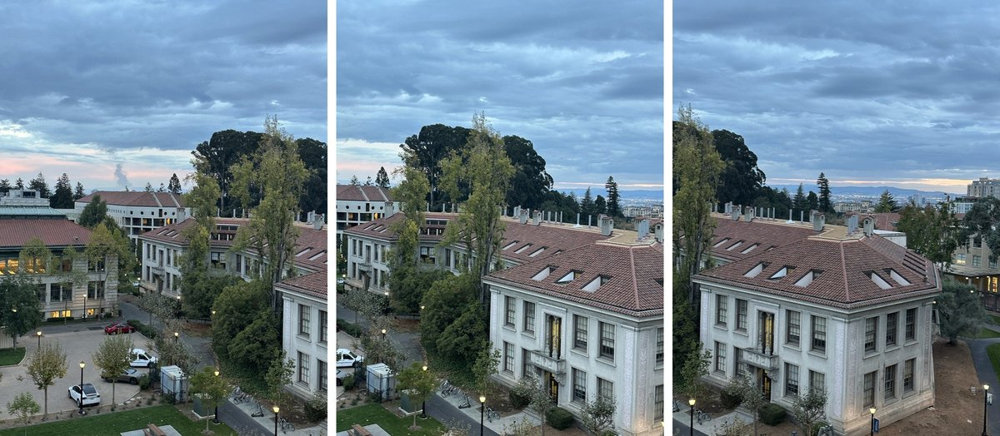
campus · 2x zoom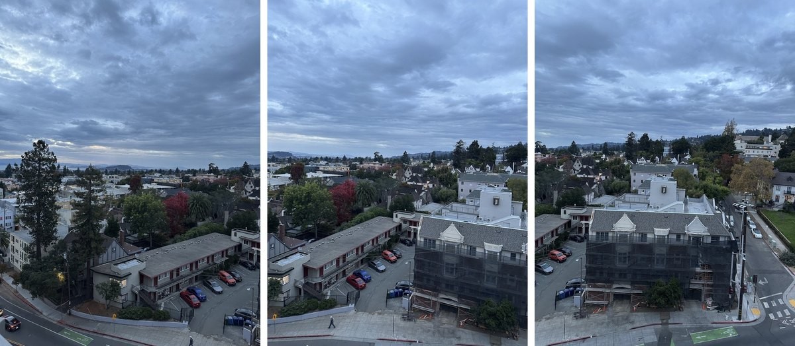
street · 1x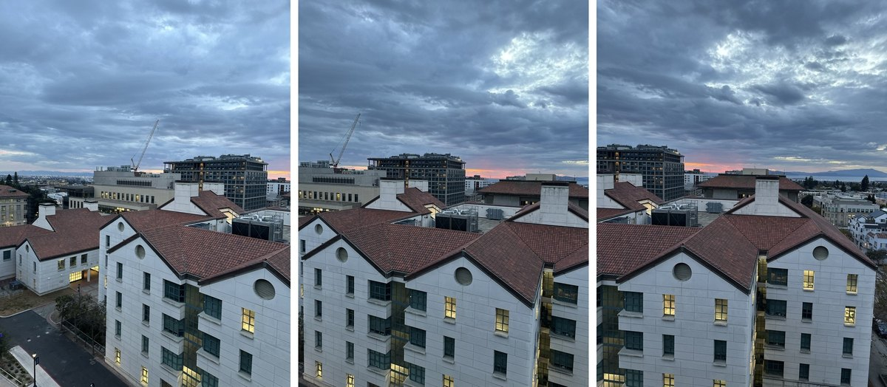
gables · 1xPart A.2
Recovering homographies
Solving for the 3 × 3 matrix that maps one photo onto the next.
A homography maps a point (x, y) in one image to (x′, y′) in another. In homogeneous coordinates it's a 3 × 3 matrix H, with [x′, y′, 1] equal to H [x, y, 1] up to scale. Since the scale doesn't matter, I fix the bottom right entry to 1, which leaves 8 unknowns:
y′ = (d x + e y + f) / (g x + h y + 1)
Multiplying both sides by the denominator makes each equation linear in the unknowns. So every correspondence gives two rows of a linear system A h = b, with h = (a, b, c, d, e, f, g, h):
[0, 0, 0, x, y, 1, −x y′, −y y′] · h = y′
Four points give exactly 8 equations, so H would fit them perfectly, including any error in where they were placed. I used 10 to 12 points per pair and solved the overdetermined system with least squares (np.linalg.lstsq). To apply H to points, I add a 1 to each point, multiply, and divide by the third coordinate to get back to pixels.
Correspondences
I clicked points on each pair with a small matplotlib tool. My first clicks were bunched up in the middle of the overlap, which pins H down there but lets it drift everywhere else. So with AI help I snapped my clicks onto the exact corners they were on and added points on sharp corners spread over the whole overlap, staying off the sky, trees and people. The rectangle corners in part A.3 were placed the same way.
The reprojection error is how far H puts each point from its match in the other photo. It's under a pixel on average for every pair, in the 900 × 1200 images the code works with:
| mosaic | pair | points | mean error | worst |
|---|---|---|---|---|
| campus | 7467 → 7469 | 11 | 0.37 px | 0.79 px |
| campus | 7469 → 7471 | 12 | 0.39 px | 0.83 px |
| street | 7496 → 7497 | 11 | 0.97 px | 2.21 px |
| street | 7497 → 7498 | 11 | 0.51 px | 1.10 px |
| gables | 7505 → 7506 | 10 | 0.78 px | 1.66 px |
| gables | 7506 → 7507 | 11 | 0.55 px | 0.93 px |
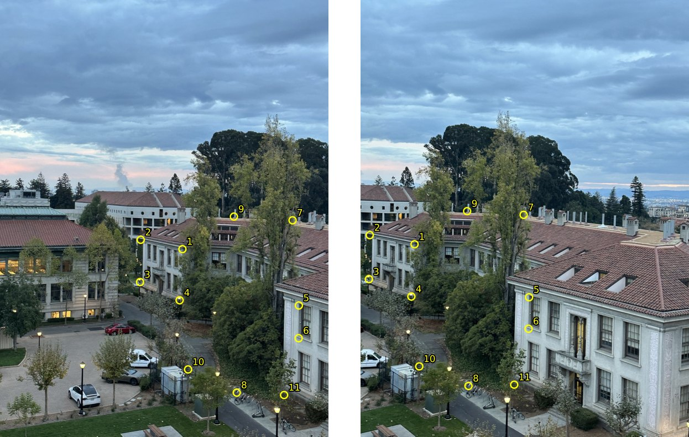
campus · 7467 → 7469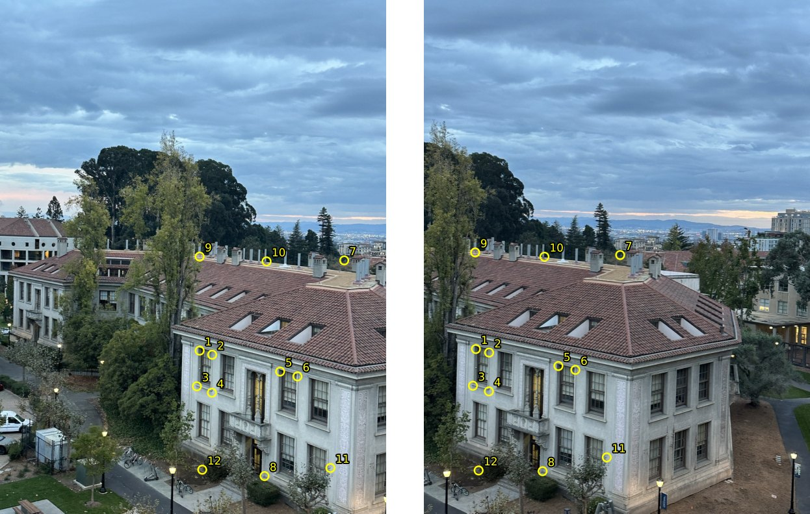
campus · 7469 → 7471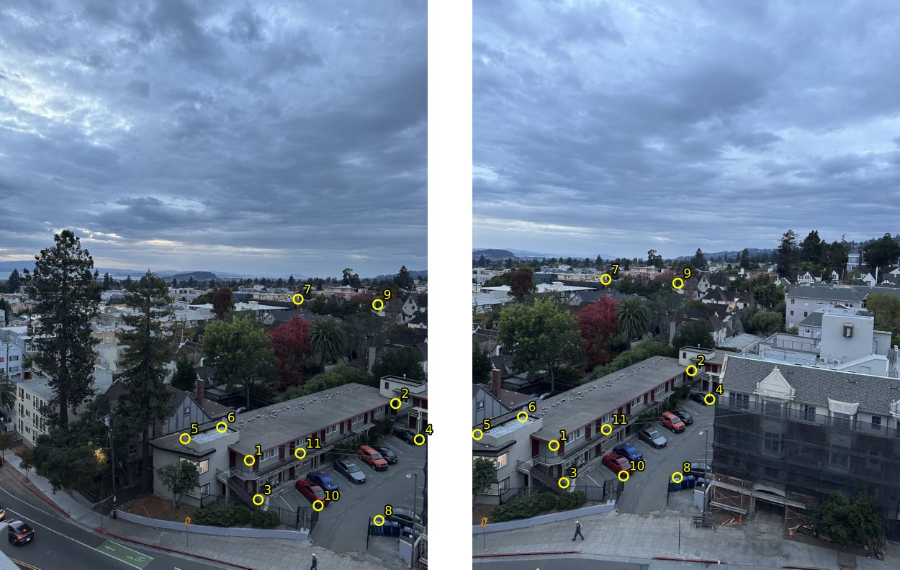
street · 7496 → 7497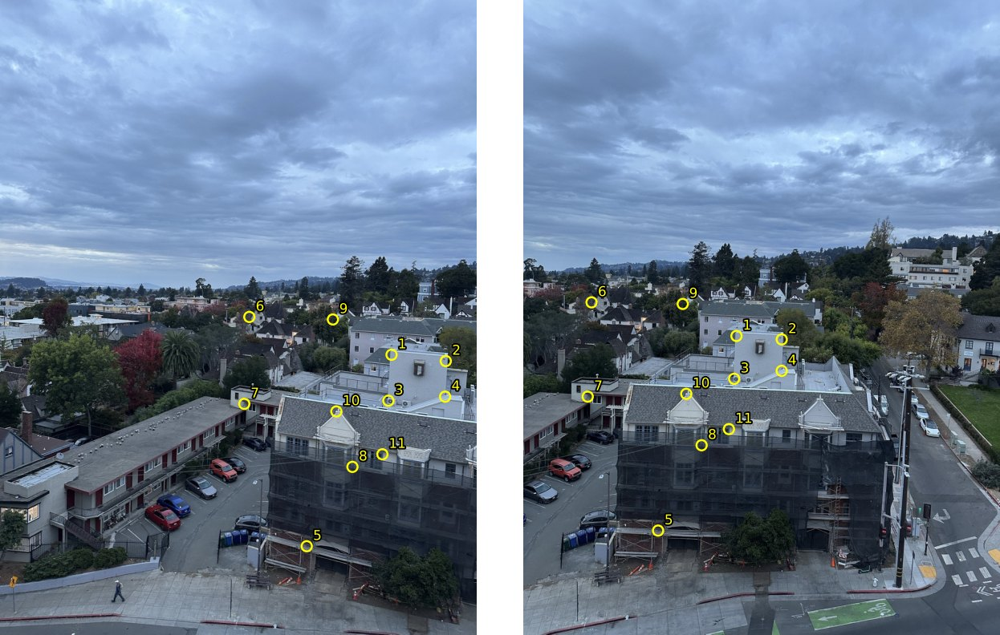
street · 7497 → 7498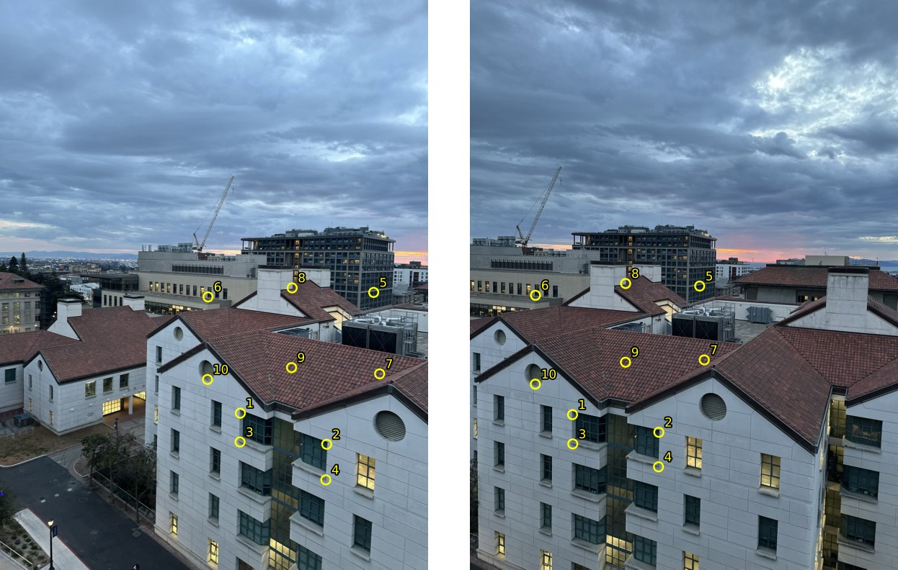
gables · 7505 → 7506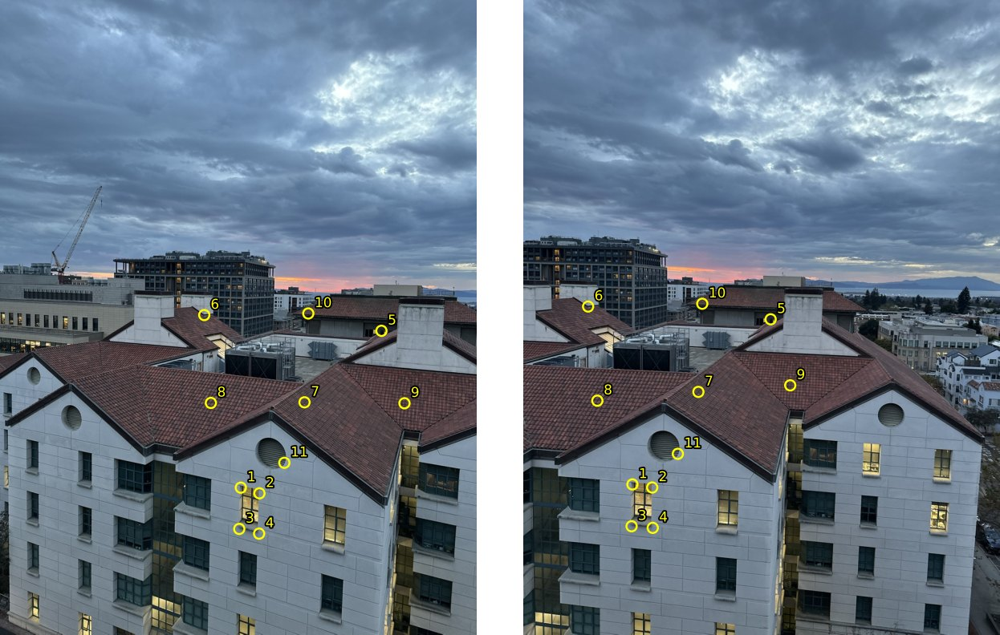
gables · 7506 → 7507The system for one pair
Here is the full system for the first campus pair (7467 → 7469, 11 points, so 22 equations), and the H that least squares gives for every pair.
The top right entry is the shift: about −420 pixels between campus shots, since turning right slides the scene left. The bottom row is the perspective part. It looks tiny, but x goes up to about 900, so the denominator changes by around 20 percent across the photo.
Part A.3
Warping and rectification
Inverse warping with nearest neighbor and bilinear interpolation, tested by making two slanted rectangles square on.
To warp an image by H, I go backwards. For every output pixel I compute where it came from in the input with H−1 and look up the color there. Going forwards (sending every input pixel through H) leaves holes wherever H stretches the image. Going backwards gives every output pixel exactly one value.
The size of the output comes from sending the input's 4 corner pixels through H and taking the smallest box that holds them. A homography keeps straight lines straight, so the corners are always the extremes. Output pixels whose source lands outside the input stay black, and the warp also returns a mask of which pixels were inside, so the blending in part A.4 can ignore the rest.
The two warps only differ in how they read a color at a position that isn't a whole number, like (412.7, 300.2). Nearest neighbor rounds to the closest pixel. Bilinear blends the 4 pixels around the point, each weighted by how close the point is to it: (1 − fx)(1 − fy) for the top left and so on, where fx and fy are the fractional parts. The 4 weights always add to 1. Both work on any number of channels, which part A.4 uses to warp the blending weights along with the photo.
Rectification
To test the warps I rectified two photos. I took the 4 corners of something I know is a rectangle, mapped them to a rectangle with the right proportions, and let computeH and the warp do the rest. For the facade I used the grid of 6 windows on the side of the building, which I estimated at about 4:5 wide to tall. For the floor I used a metal access hatch, a little wider than it is long. Rectifying the floor sends the horizon off to infinity, so for these I only warp a box around the rectangle plus some margin.
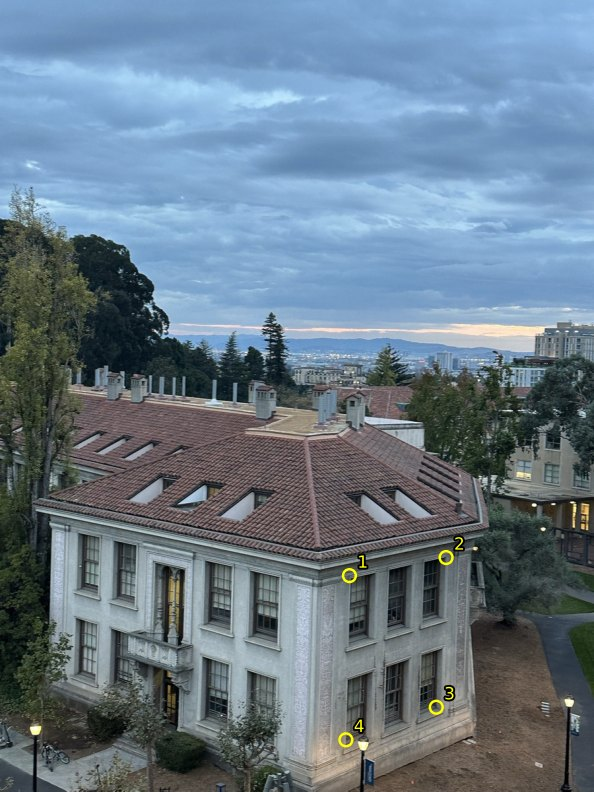
input + corners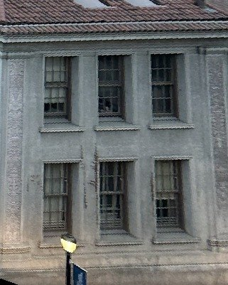
nearest neighbor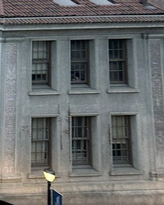
bilinear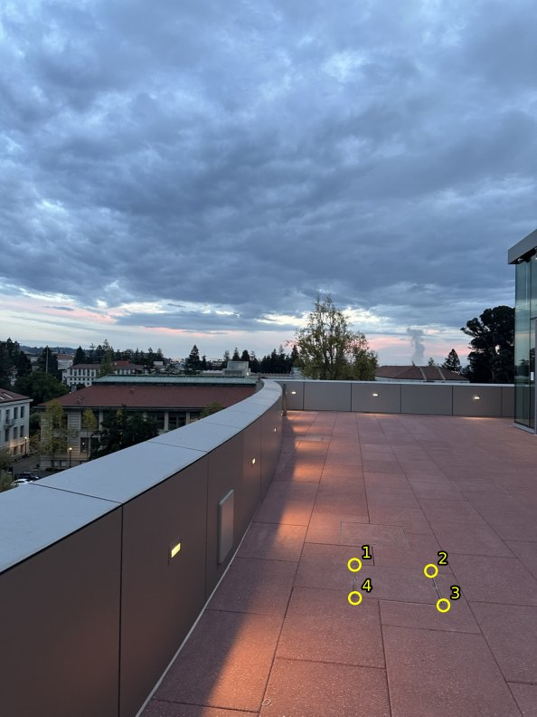
input + corners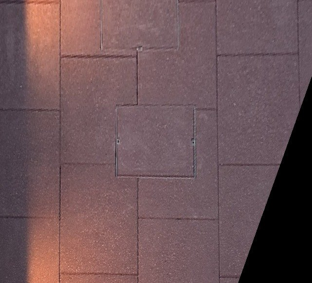
nearest neighbor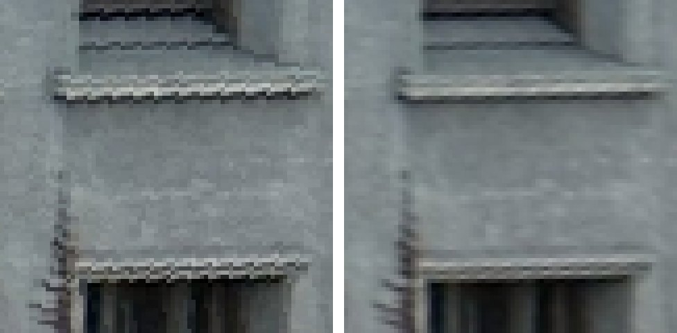
6x zoom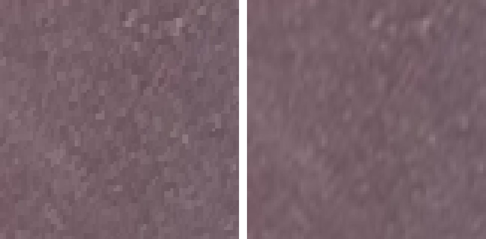
6x zoomThe lines that should be straight and parallel come out that way: the window rows and columns in the facade, and the seams between the floor slabs. Nearest neighbor turns edges into stairs, which is easiest to see on the window sills. Bilinear keeps them smooth and is only a little softer. It does 4 lookups plus the weights for every pixel instead of 1, and took about 2.4x as long:
| photo | output | nearest neighbor | bilinear |
|---|---|---|---|
| facade | 321 × 401 | 6 ms | 14 ms |
| tiles | 641 × 580 | 20 ms | 48 ms |
I used bilinear for the mosaics. The speed difference is small and the jagged edges would show up in every overlap.
Part A.4
Mosaics
Warping every photo into the middle photo's frame and blending the overlaps.
Each mosaic is 3 photos. The middle one stays put and the other two get warped into its frame. H0 already maps the left photo onto the middle one. H1 maps the middle photo onto the right one, so the right photo uses its inverse. With more photos the steps chain, with the first step on the right: photo 0 into photo 2's frame would be H1 H0.
I warp every photo's corners to find one canvas that holds all of them, then warp each photo onto that canvas with the bilinear warp. Every warped photo is the size of the whole canvas, black outside its own area, and its pixels line up with the others.
For blending, each photo gets a weight that's 1 at its center and falls to 0 at its edges: the distance to the nearest edge, divided by its max (what bwdist gives for a rectangle). The weights get warped along with the photo as a 4th channel. Then every pixel of the mosaic is the weighted average
so in an overlap one photo fades out as the next fades in. Dividing by the sum of the weights keeps the overlaps from coming out brighter than the rest. Where no photo has any weight, the mosaic stays black.
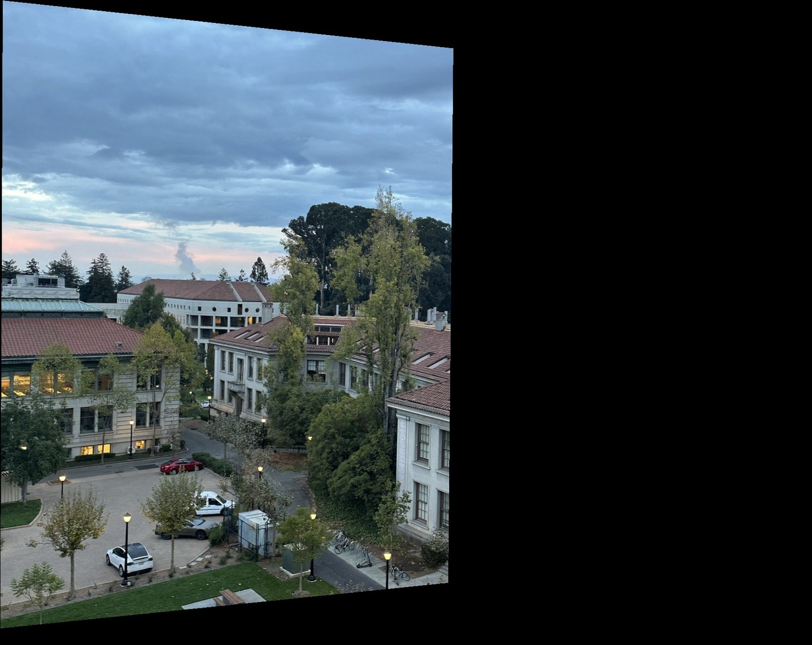
7467 warped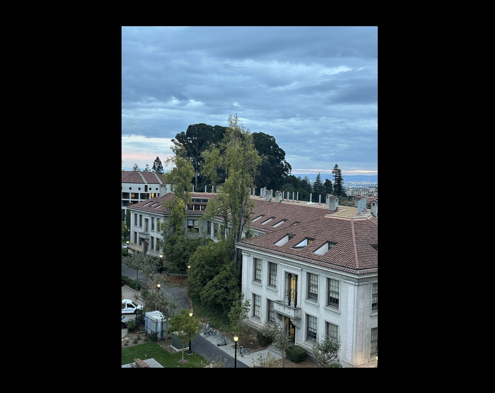
7469 (reference)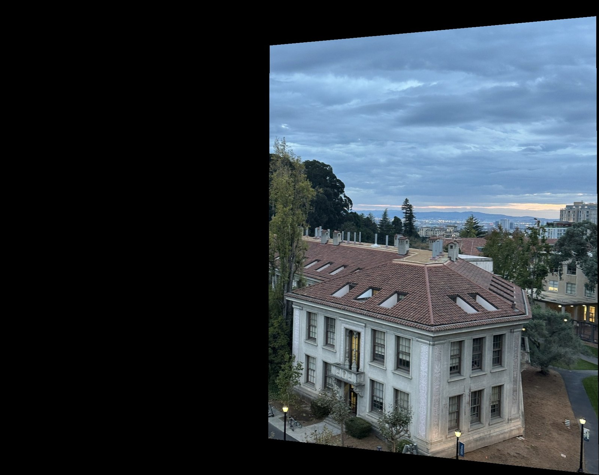
7471 warped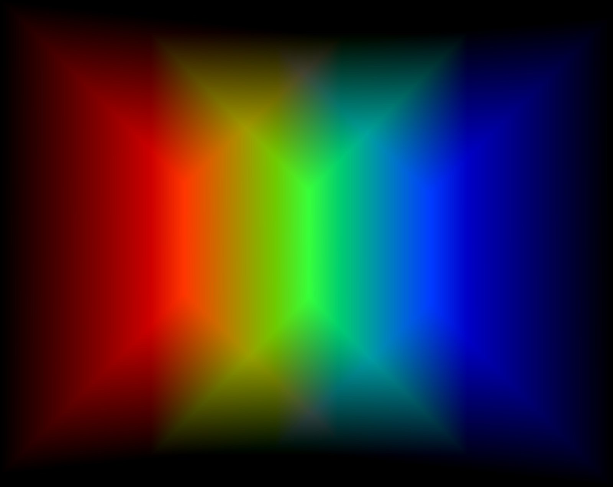
weightscampus
Three shots at 2x zoom of the buildings below the terrace.
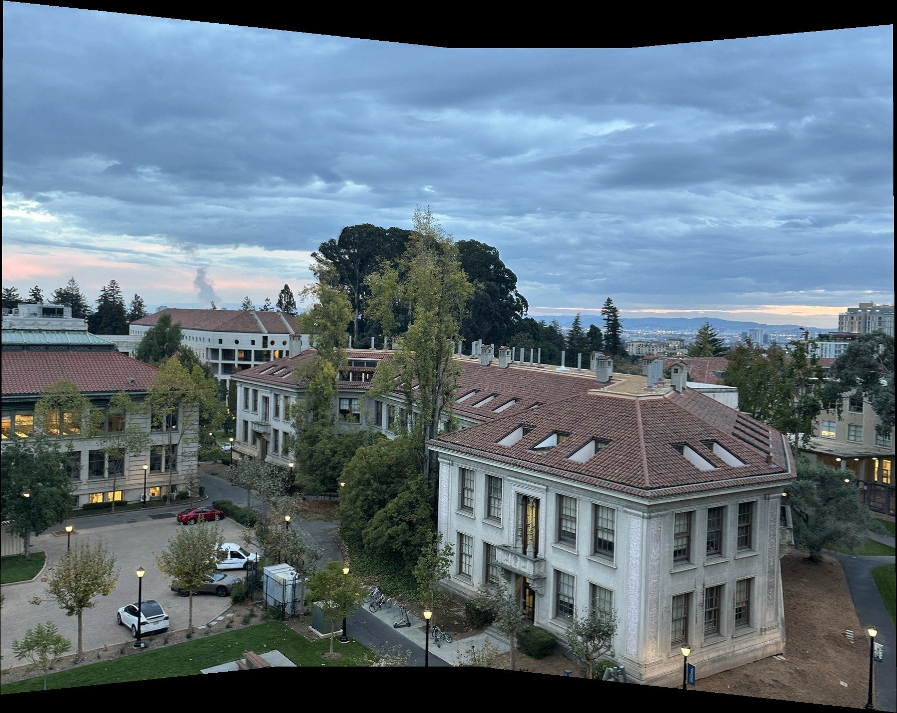
mosaicstreet
The street and intersection below, at 1x.
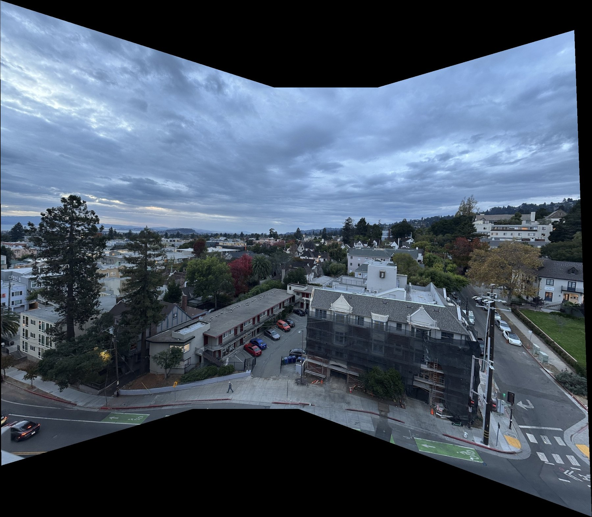
mosaicgables
The white building with the round windows, and the city behind it, at 1x.
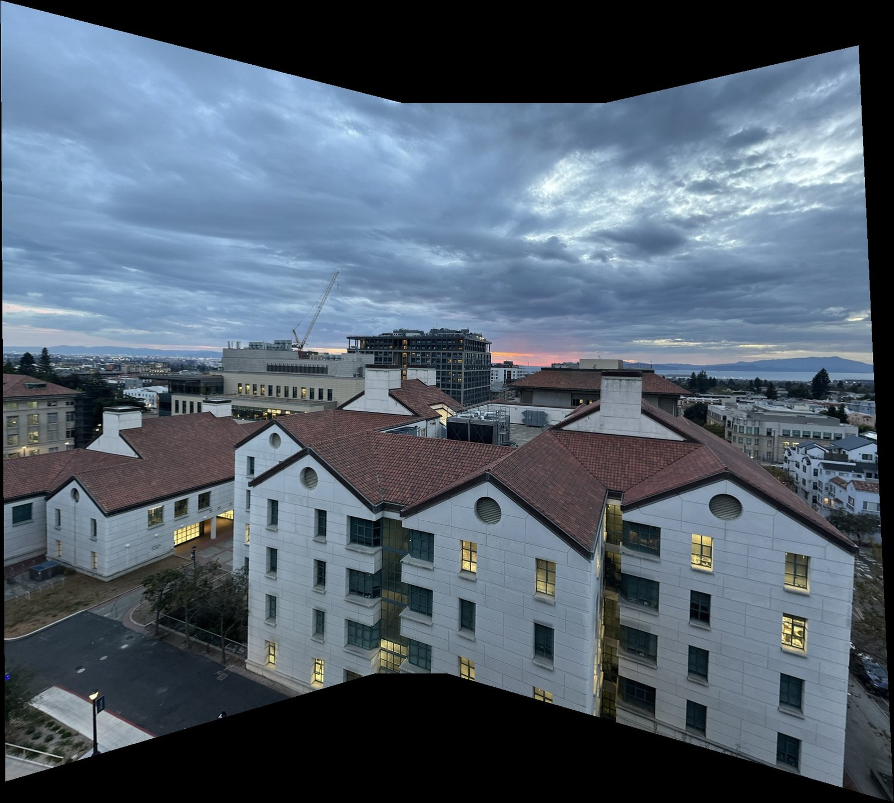
mosaicPart A.4
Feathering vs two-band blending
Why the final mosaics use a two-level Laplacian pyramid instead of a plain weighted average.
Pasting each photo on top of the last shows hard seams, mostly in the sky, because each shot came out a little brighter or darker than the one before. Feathering gets rid of the seams. But anything that doesn't line up exactly between two shots shows up twice, since the average has a faint copy from each photo. In the gables mosaic, the crane is doubled.
So I also did two-band blending, a Laplacian pyramid with two levels. Each photo is split into a low band (a Gaussian blur with σ = 2) and a high band (the photo minus the blur), and the two bands are blended differently:
Low band: feathered like before. Color and brightness fade smoothly across the overlap, so there's no seam. High band: at each pixel it comes only from the photo with the biggest weight, so edges are never averaged and nothing doubles. Adding the two bands back together gives the final mosaic. When I blur each photo, I only blur its own pixels (and divide by the blurred mask), so the black around it doesn't darken its edges.
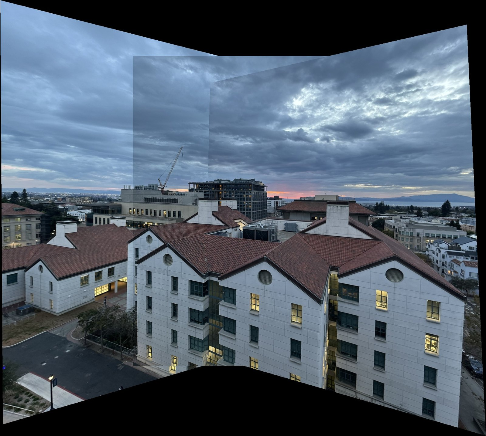
overwrite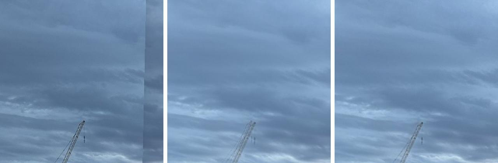
zoom on the craneWhy two bands work
Each band needs a different kind of transition. Coarse things like brightness need a wide, gradual one, or you see a jump. Fine things like edges need a sharp one, or two slightly misaligned copies get averaged into a ghost. Feathering gives everything a wide transition and overwrite gives everything a sharp one. Two bands give each its own.
Part B.1
Corners
Finding corners with Harris, then keeping 500 that are spread over the whole photo.
Part B makes the same three mosaics without picking any points by hand. It follows "Multi-Image Matching using Multi-Scale Oriented Patches" by Brown, Szeliski and Winder, with a few simplifications: one scale, no rotation, and plain nearest neighbor search instead of their wavelet index.
Corners are good points to match because they're easy to find again in the next photo. Around a corner the image changes in every direction, unlike an edge (one direction) or a flat patch (none). I used the course's Harris code, which keeps every local maximum of the corner strength. In the middle campus photo that's 29,222 corners, far too many, and they cover everything, including the noise in the sky.
Keeping the strongest 500 doesn't work well either. Strong corners bunch up wherever there's a lot of contrast, and two photos might only overlap in a strip. Adaptive non-maximal suppression (ANMS) spreads them out. Each corner gets a radius: the distance to the nearest corner that's clearly stronger than it, meaning its strength is less than crobust = 0.9 times the other one's. The strongest corner has nothing stronger, so its radius is infinite. Then I keep the 500 corners with the biggest radius. A big radius means a corner is the strongest thing for a long way around, so the ones that are kept end up spread evenly.
With 29,222 corners, a table of every distance would take 6.8 GB, so I sort the corners strongest first and do 500 rows at a time. Only corners earlier in the sorted list can suppress a corner, so each chunk only has to look at the start of the list.
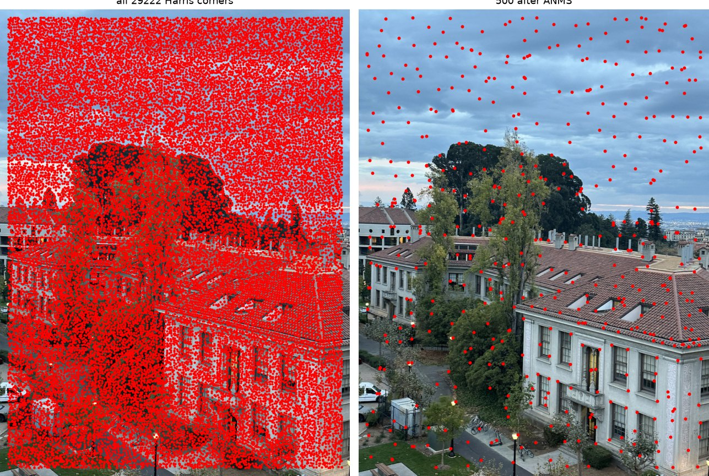
campus · 7469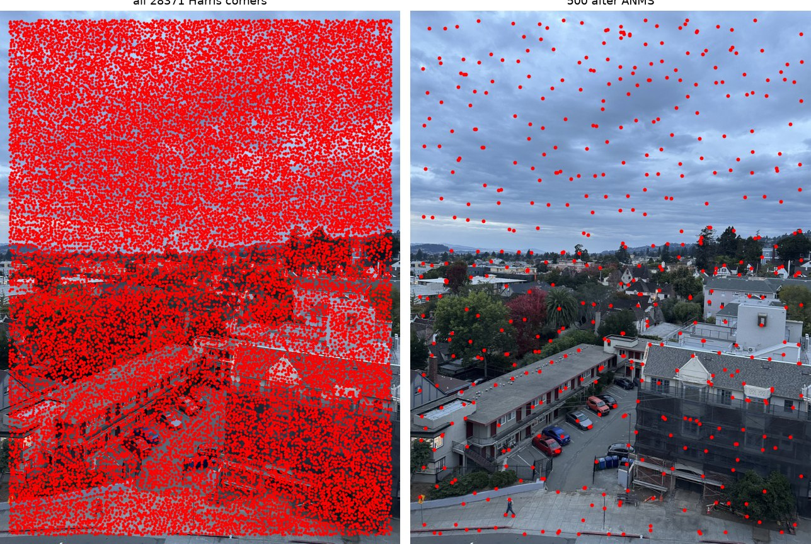
street · 7497A lot of the 500 land in the sky. The paper drops weak corners with a threshold, but this Harris code keeps every local maximum, and inside a flat cloud a weak blip can be the strongest thing for 50 pixels around. Those corners mostly get thrown out later.
Part B.2
Descriptors
Describing each corner with a small, blurry, normalized patch.
To match corners between photos, each one needs a description that comes out about the same in both. Mine is an 8 × 8 patch sampled from the 40 × 40 window around the corner, with the samples 5 pixels apart.
Why not just the 8 × 8 pixels around the corner? The paper found that Harris corners are usually 1 to 3 pixels off, so the same corner lands in a slightly different spot in each photo. On a fine texture, a shift of a couple of pixels changes every raw pixel. Samples 5 pixels apart on a blurred image barely change. The bigger window also has more in it to recognize: a whole window frame instead of a bit of wall.
I blur the photo (Gaussian, σ = 2) before taking every 5th pixel. Without the blur, fine patterns alias into fake coarse ones, like the downsampling in Project 2. Then I subtract the patch's mean and divide by its standard deviation, so a brighter or higher contrast copy of the same patch gives the same 64 numbers. That matters because the phone's auto exposure changes a little between shots.
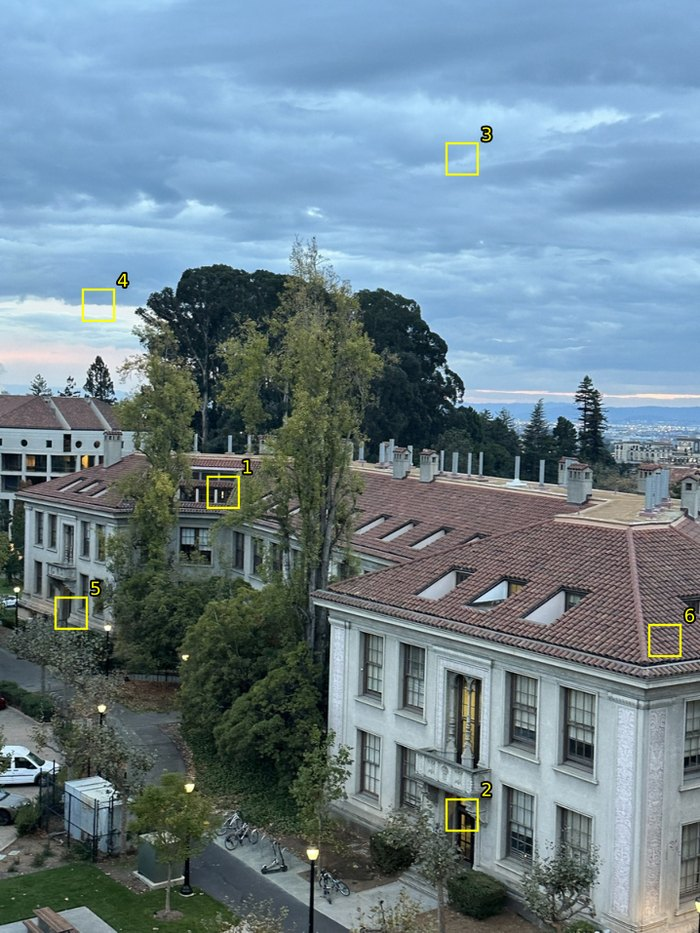
where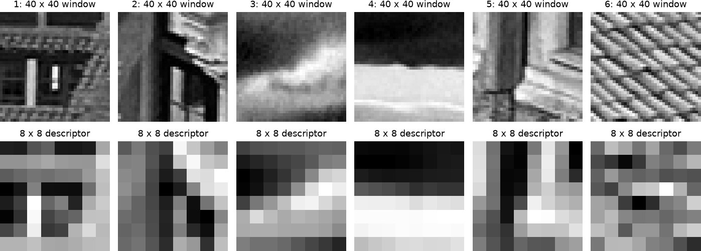
40 × 40 → 8 × 8Part B.3
Matching
Pairing up features that look alike, but only when the best match clearly beats the second best.
For each feature in one photo, I find the closest descriptor in the other photo by the sum of squared differences. All 500 × 500 errors come out of one matrix product, using |a − b|² = |a|² + |b|² − 2 a·b.
The closest match alone isn't enough. Some features are distinctive and some aren't, so no single error cleanly separates right matches from wrong ones (Figure 6a in the paper). Lowe's trick is to compare the best match to the second best. The second best is almost surely wrong, so it shows what a wrong match costs for that particular feature, and a real match should be much better than that. A roof tile that looks like ten other roof tiles has a best and second best that are about equally good, so it gets dropped.
In the paper's Figure 6b, wrong matches are rare until the ratio of squared errors gets to about 0.4 or 0.5, and then they shoot up. To pick a number, I checked the matches against my Part A homographies. A match counts as right if it lands within 3 pixels of where H says it should. Each cell is right matches / all matches:
| pair | 0.3 | 0.4 | 0.5 | 0.6 | 0.7 |
|---|---|---|---|---|---|
| campus 7467 → 7469 | 114 / 134 | 117 / 139 | 119 / 146 | 120 / 158 | 123 / 184 |
| campus 7469 → 7471 | 112 / 138 | 121 / 154 | 126 / 167 | 132 / 185 | 139 / 211 |
| street 7496 → 7497 | 35 / 73 | 44 / 93 | 55 / 115 | 64 / 139 | 67 / 163 |
| street 7497 → 7498 | 65 / 91 | 83 / 119 | 89 / 132 | 95 / 155 | 100 / 187 |
| gables 7505 → 7506 | 57 / 88 | 67 / 107 | 75 / 127 | 85 / 147 | 92 / 182 |
| gables 7506 → 7507 | 59 / 115 | 74 / 143 | 84 / 170 | 89 / 190 | 94 / 223 |
I used 0.5. Going up to 0.7 adds a few right matches and a lot more wrong ones.
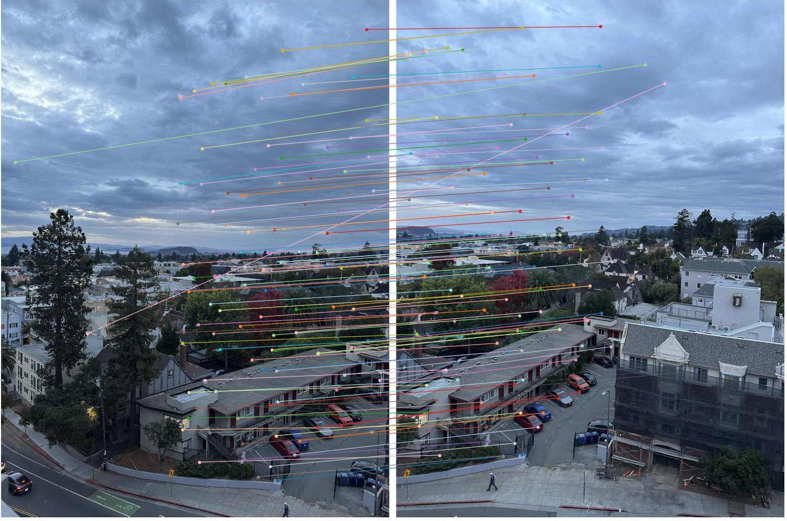
street · 7496 → 7497Most of the wrong matches are in the sky, and they aren't bad descriptor matches. The same cloud really was found in both photos, but it moved in the seconds between shots, so it doesn't fit the homography that lines up the buildings. In the figure, the lines in the sky are parallel to each other but at a slightly different angle from the lines on the buildings.
Part B.4
RANSAC
Fitting H to the matches that agree with each other and ignoring the rest.
Even after the ratio test, a lot of matches are wrong, and least squares on all of them would get pulled off by the bad ones. So I used RANSAC. Pick 4 random matches, fit H to them with computeH from Part A, and count how many of all the matches that H puts within 2 pixels of their partner. Those are its inliers. Repeat, and keep the H with the most inliers.
Four is the fewest matches that pin down H (8 unknowns, 2 equations each). If all 4 are right, that H puts most of the other right matches in the right place too. If even one is wrong, almost nothing agrees with it. In the worst pair about 52% of the matches are inliers, so a random 4 are all right about 7% of the time, and 60 tries would find a clean sample with 99 percent certainty. I used 1000 to be safe, which takes about 45 ms.
The winning H comes from 4 points that are each off by a pixel or so. So at the end I fit H again with least squares on all of its inliers, which averages that out.
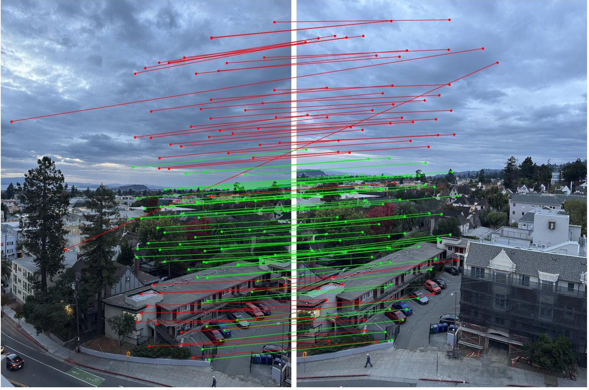
street · 7496 → 7497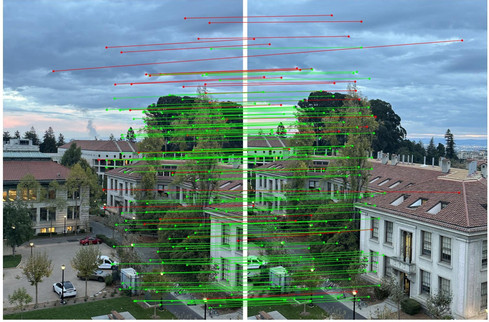
campus · 7467 → 7469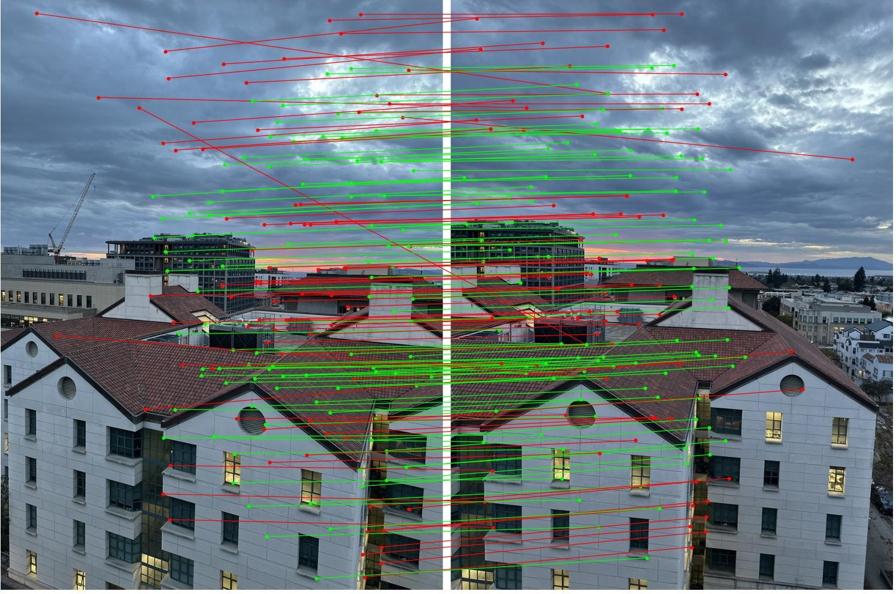
gables · 7506 → 7507My Part A points are a fair test of the automatic H, because RANSAC never sees them. The last two columns are how far they land from their partners with the Part A H and with the automatic one:
| pair | matches | inliers | Part A H | automatic H |
|---|---|---|---|---|
| campus 7467 → 7469 | 146 | 117 | 0.37 px | 0.68 px |
| campus 7469 → 7471 | 167 | 122 | 0.39 px | 0.85 px |
| street 7496 → 7497 | 115 | 60 | 0.97 px | 2.86 px |
| street 7497 → 7498 | 132 | 73 | 0.51 px | 0.71 px |
| gables 7505 → 7506 | 127 | 72 | 0.78 px | 1.06 px |
| gables 7506 → 7507 | 170 | 93 | 0.55 px | 1.65 px |
Two kinds of matches got thrown out. One is the sky, because the clouds drifted unevenly and never agree with one H within 2 pixels. The other, in the street pair, is most of the parking lot and the long building next to it at the bottom, which are much closer than the rest of the scene (12 of the 21 matches in the bottom quarter got thrown out). I turned the phone in my hand, so the lens moved a few centimeters between shots. Far things barely shift from that and near things shift a lot (parallax), so no single homography fits both. RANSAC fit the layer with the most matches, the houses and trees in the middle distance. That's why the automatic H is 2.9 pixels off on my Part A points for that pair: some of those points are on the near stuff, so the Part A H is a compromise between the two distances.
Part B.4
Automatic mosaics
The same three mosaics from Part A's points and fully automatic, side by side.
Both versions use the same warping and two-band blending from Part A. The only difference is where the homographies come from.
campus
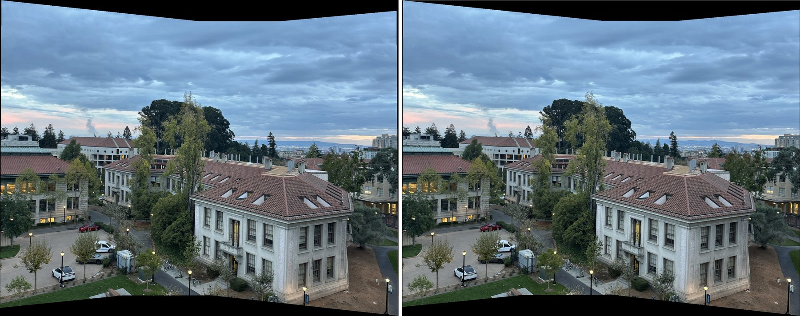
Part A | automaticstreet
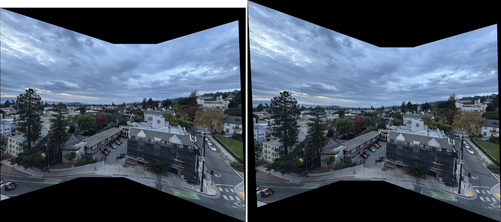
Part A | automaticgables
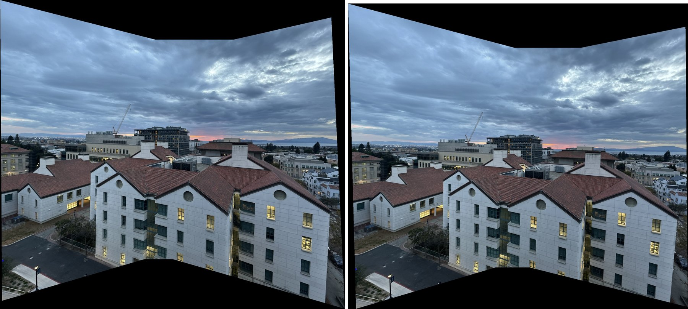
Part A | automatic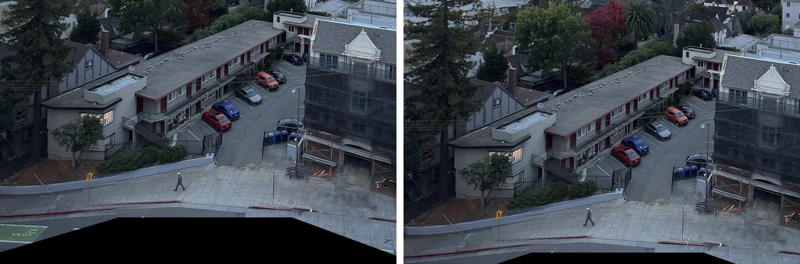
zoomWhat RANSAC is really choosing
RANSAC doesn't only throw out bad matches. When the scene has things at different distances and the camera moved a little, it picks one distance to line up, whichever has the most matches. Here that's the city in the middle distance, which fills most of each photo. My Part A points on the parking lot land up to 9 pixels off with the automatic H. It doesn't show, because the two-band blend takes the fine detail at each pixel from one photo only, so there's nothing to double.
Part B.5 · bells & whistles
Panorama recognition
Handing it a pile of photos in no order and letting it find the panoramas.
For B.5 I did panorama recognition, from Brown and Lowe's "Automatic Panoramic Image Stitching using Invariant Features". The input is a pile of 12 photos in no order: the 9 from my three mosaics, plus 3 from another pan I never stitched (7489, 7490 and 7493). Nothing tells it which photos go together or in what order.
It runs Part B on every pair, 66 pairs in all: features, matching and RANSAC. Then it decides which pairs really overlap. Photos that don't overlap still give RANSAC a few inliers by chance, so Brown and Lowe only accept a pair if it has more than 8 + 0.3 nf inliers, where nf is the number of features that land in the overlap. That threw out my real street and gables pairs. A lot of my features are on clouds that moved between shots, so they're in the overlap but can never be inliers. I kept their test but used 0.1 instead of 0.3. Pairs from different groups never got more than 7 inliers and the weakest pair it kept had 21, so there's still a wide gap.
Photos connected by accepted pairs form a group. In each group, the reference is the photo with the most inliers to the others, which turns out to be the middle one. Then it grows out from the reference along the strongest pair left (a maximum spanning tree) and chains the H's, like in Part A. Last, it orders each group left to right by where its photos land, and stitches it with the Part A code.
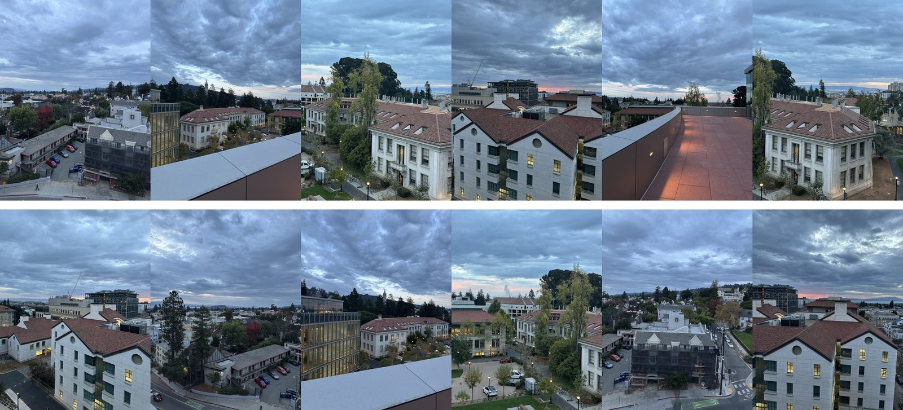
the pile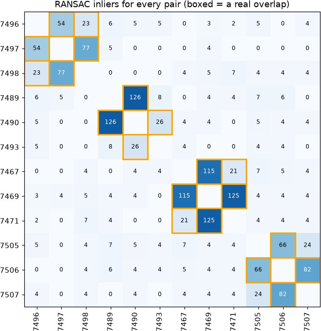
inliersSorted by the groups it found, the real overlaps are the boxed blocks along the diagonal. It also accepted some pairs that skip a photo, like 7496 and 7498, which really do overlap a little. One pair that skips a photo, 7505 and 7507, just missed the cutoff with 24 inliers. That doesn't matter, because both connect through the photo between them.
It found 4 panoramas: my three, in the right order with the middle photo as the reference, and one more from the photos I never stitched. It worked out that the floor photo, 7493, overlaps 7490 too, and put all three together.
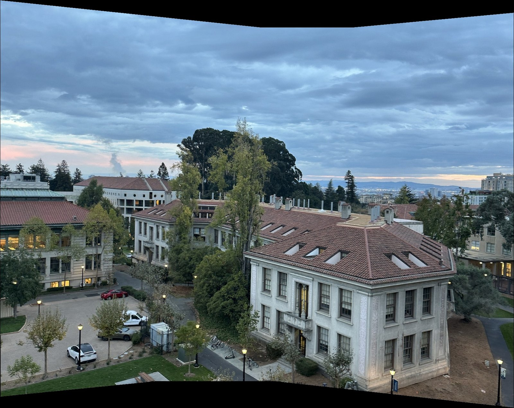
found: 7467, 7469, 7471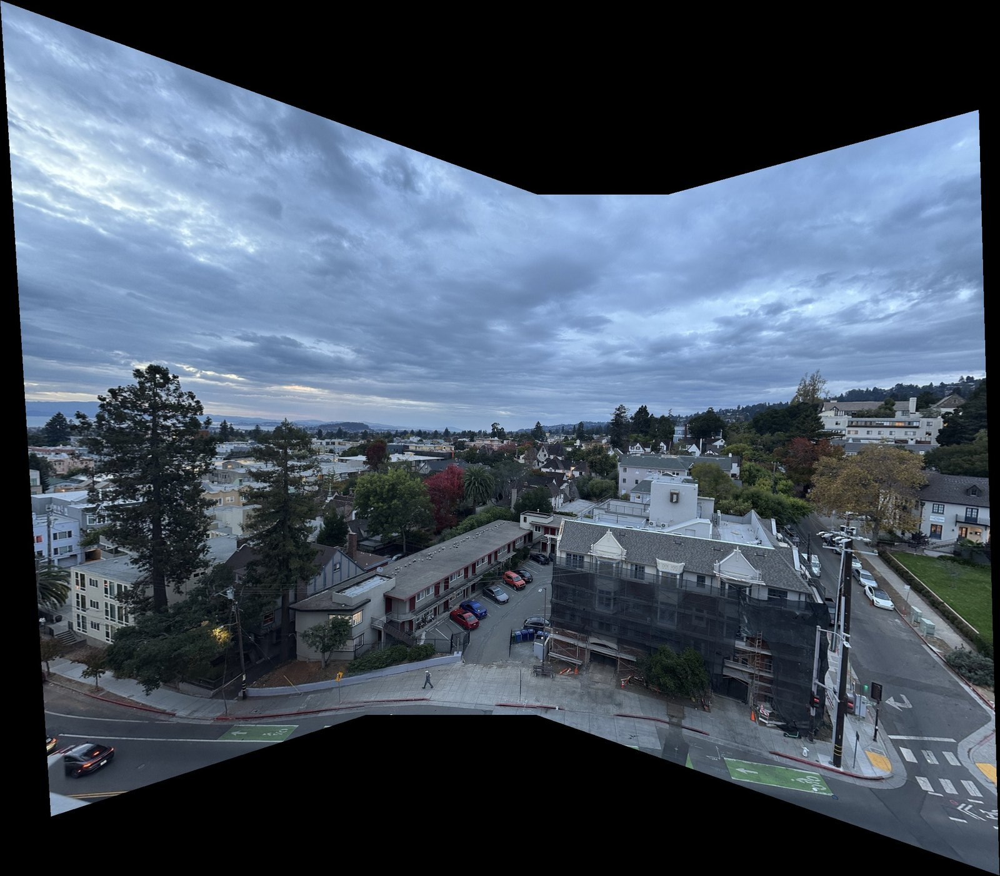
found: 7496, 7497, 7498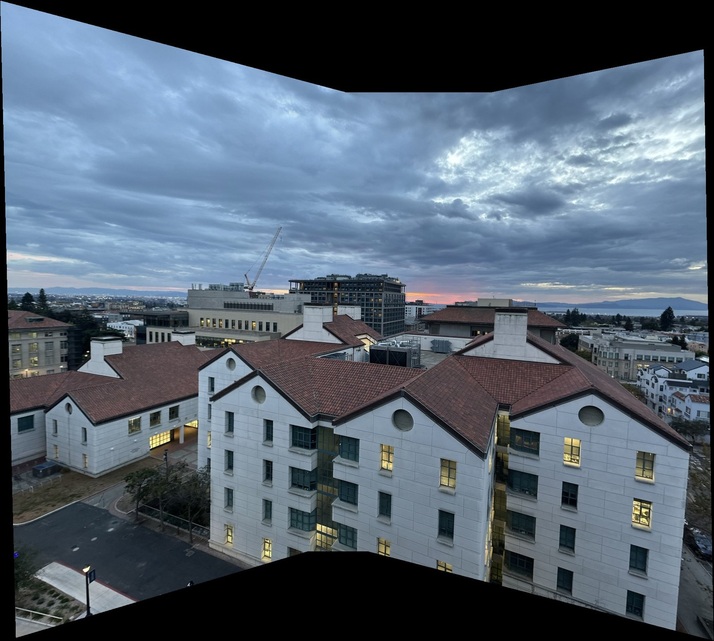
found: 7505, 7506, 7507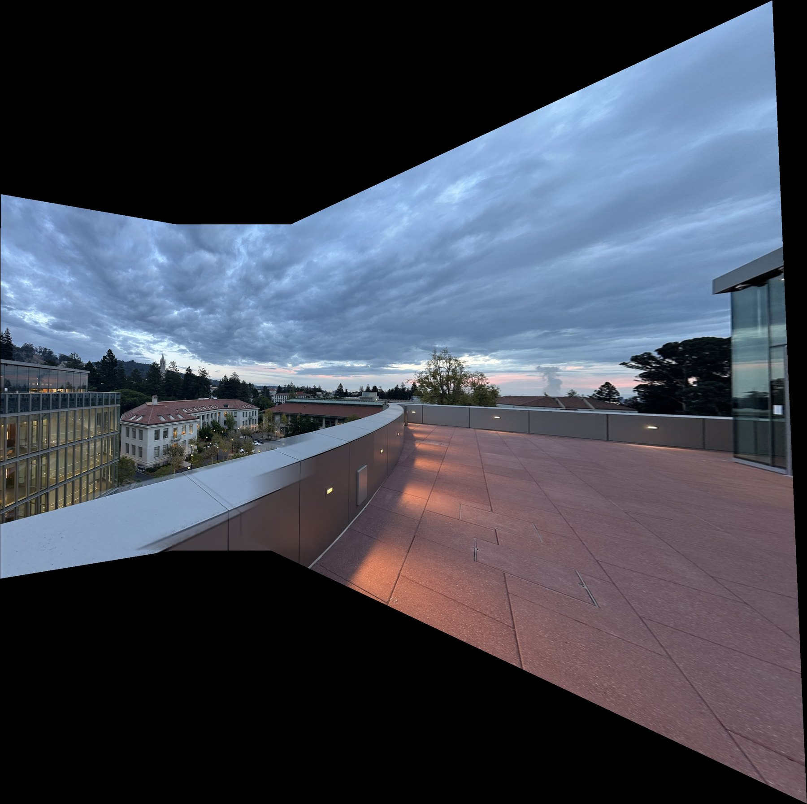
found: 7489, 7490, 7493The new one has a smear on the terrace wall where the photos meet. The wall is about a meter from the camera, so it's the parallax problem from the street mosaic, only much worse. Everything past the wall lines up.